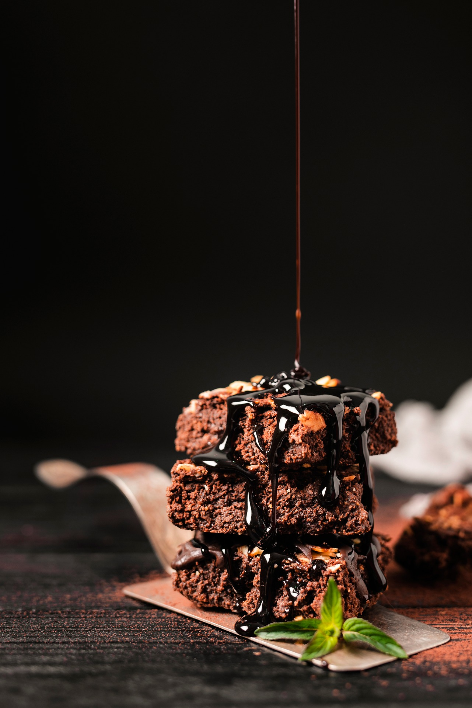

Descripción
El brownie de chocolate es un bizcocho denso, húmedo y concentrado originario de Estados Unidos. A diferencia de un pastel tradicional, no lleva levadura química, lo que le da su textura característica: crujiente por fuera, con una fina capa agrietada en la superficie, y muy meloso o jugoso por dentro . Es el postre perfecto para los amantes del chocolate intenso.
